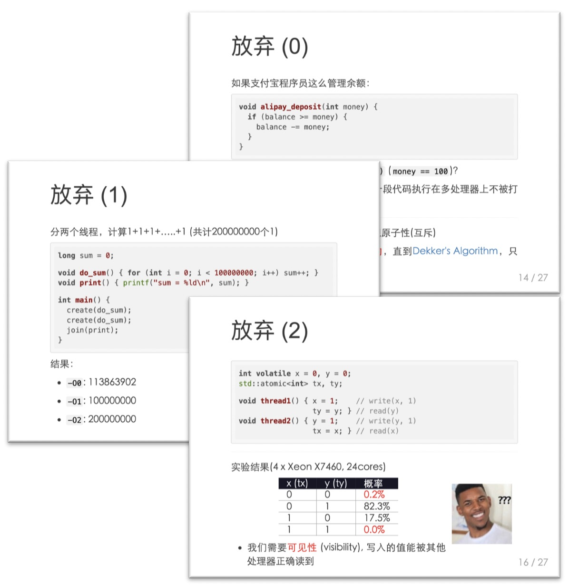
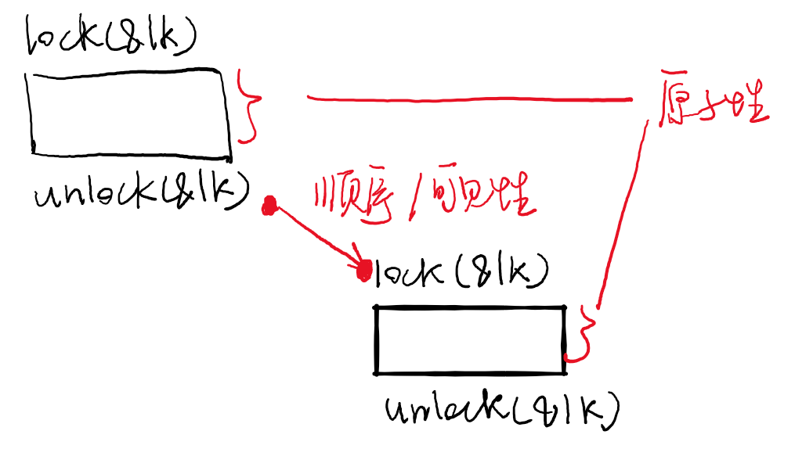
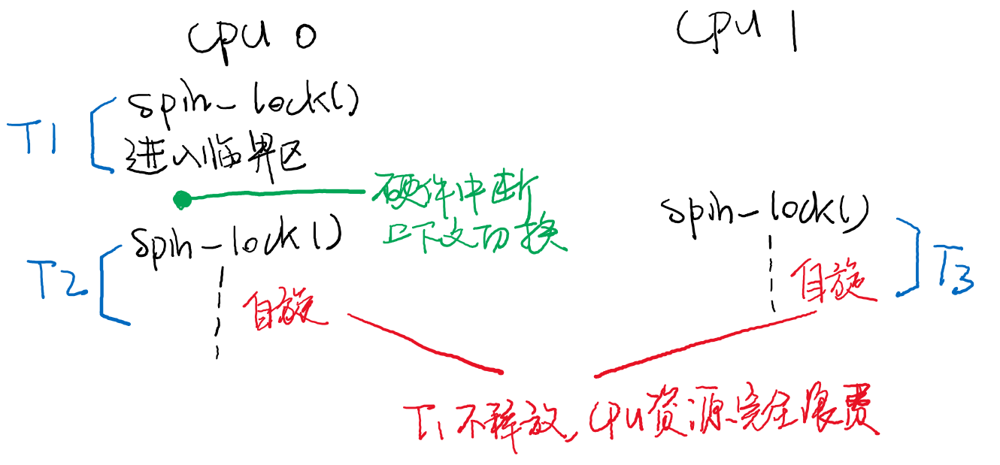
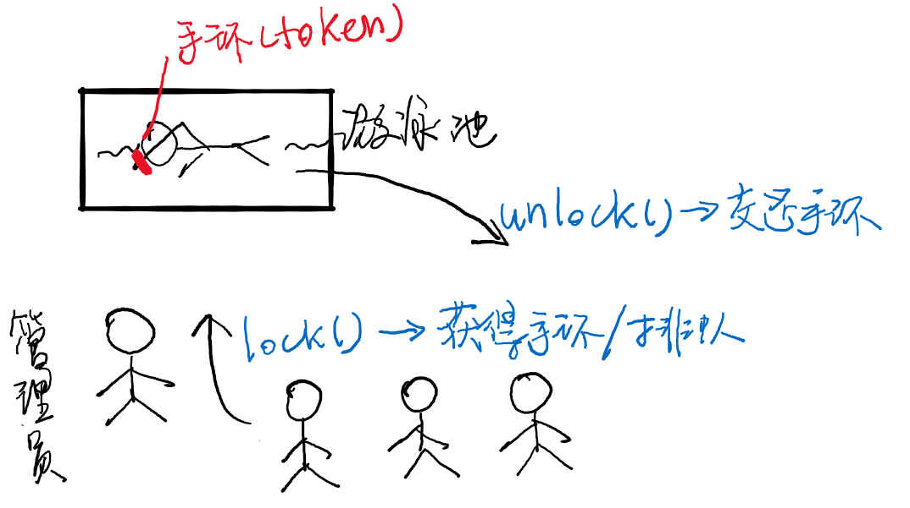

public: True class: center, middle # 互斥 蒋炎岩 <jyy@nju.edu.cn> 南京大学计算机软件研究所 --- # 本讲概述 > 引子：没想到一个共享内存就能把事情搞砸，这么说来，人类就根本没法写并发程序了啊！这个时候.red[抽象]的用处就来了： > > * 计算机硬件应当为我们提供适当的.red[机制]，帮助我们实现.red[人类容易理解的并发编程方式] > * 如果把物理世界里的每个人想象成是线程，物理世界是共享内存，我们怎么解决各种问题呢？ ---- * 互斥：扩展的顺序、原子性、可见性 * 实现互斥 --- class: center, middle # 互斥 (Mutual Exclusion) --- # 为什么需要互斥？ .float-right[] 我们希望为多处理器编程，但允许程序同时访问共享内存是非常麻烦的 * 编译器破坏了.red[顺序] * 操作系统/中断破坏了.red[原子性] * 多处理器破坏了.red[可见性] ---- 但这三点都是我们.blue[编程时赖以生存的基本假设] --- # 互斥 (Mutual Exclusion) “互相排斥”——.red[顺序]、.red[原子性]、.red[可见性]的回归 * 所有`do_sth()`都被排序，且执行不被打扰 * 所有`do_sth()`中执行的内存写，都能被后续`do_sth()`读到 ---- ```c void atomic_do_sth() { stop_the_world(); do_sth(); resume_the_world(); } ``` --- # 互斥锁 (Mutex Lock) “Stop the world”太笨重了，只需用“锁”保护一段代码区域； ```c void mutex_lock(lock_t *lk); void mutex_unlock(lock_t *lk); ``` 同一把锁的lock/unlock满足.red[顺序]、.red[原子性]、.red[可见性] .center[] --- # 互斥锁 (cont'd) 系统中可以有多把锁，分别保护不同的共享资源 * 不同类型的workloads可以并行执行 (比如不同人的购物车) ---- ```c void do_sum() { for (int i = 0; i < n; i++) { lock(&sum_lock); sum++; unlock(&sum_lock); } } void *malloc(size_t size) { void *ret; lock(&malloc_lock); ret = my_alloc(size); unlock(&malloc_lock); return ret; } ``` --- class: center, middle # 实现互斥 --- # 复习：xchg & 自旋 硬件为了更好地支持多处理器，x86提供了LOCK指令前缀 * 保证顺序、原子性、可见性 ```c int atomic_xchg(volatile int *addr, int newval) { STOP_THE_WORLD(); // 硬件保证 int tmp = *addr; *addr = newval; RESUME_THE_WORLD(); return tmp; } int locked = 0; void lock() { while (atomic_xchg(&locked, 1)) ; } void unlock() { atomic_xchg(&locked, 0); } ``` --- # LL & SC 另一种机制：Load Link / Store Condition (RISC-V, ARM, MIPS, Alpha, PowerPC) * LL & SC之间只能有寄存器操作 ---- ```c int LL(int *ptr) { 在硬件上做一些标记; // link return *ptr; // load } int SC(int *ptr, int value) { int ret = FAIL; STOP_THE_WORLD(); if (标记之后没有处理器写过ptr) { // condition *ptr = value; // store ret = SUCC; } RESUME_THE_WORLD(); return ret; } ``` --- # LL & SC (cont'd) LL-SC：“试试看，成功最好，不成功就重试吧” .center[<img src="/static/wiki/os/2019/img/ll-sc.png" width=700px/>] --- # 思考题 思考题：.green[怎样用LL/SC实现atomic xchg?] -- count: false ---- ```c int atomic_xchg(int *ptr, int new_value) { int old_value; while (1) { old_value = LL(ptr); if (SC(ptr, new_value) == SUCC) { break; } } return old_value; } ``` --- # 使用LL & SC实现自旋 ```c int volatile locked = 0; void lock() { while (1) { int value = LL(&locked); if (value == 0 && // 锁此时没有占用 SC(&locked, 1) == SUCC) { // 且没有其他人得到锁 break; } } } void unlock() { locked = 0; __sync_synchronize(); // full memory barrier } ``` --- # 理解多线程程序的执行 .float-right[<img src="../static/wiki/os/2019/img/no-key.jpg" width=200px/>] 对应到物理世界——下课争抢厕所包间的例子 * 我们 = 线程 (物理世界是天生并发的) * 物理世界 = 共享内存 ---- 在厕所门口放一个桌子(`locked`变量) * 桌上容纳一个东西，初始时是.red[钥匙]🔑 (0) * 我们每次都拿一个.red[字条] (1) 和桌上的东西.red[交换] (atomic-xchg) * 得到.green[钥匙] (0) → 使用包间；得到.blue[字条] (1) → 再试 * 出包厢时，把.red[钥匙] (0)和桌上的东西.red[交换] (atomic-xchg) * (思考题：.green[如何理解LL/SC版本的自旋锁？]) --- # 互斥锁：并发控制的抽象 有了lock/unlock，我们就不必考虑🔑了 * 同一把锁保护的代码自然具有“线程安全”特性 ---- 思考题：.green[如何实现并发的`unordered_map<int,int>`]？ ```c linked_list<pair<int,int>> hash[MOD]; spinlock_t lock; void put(unsigned int key, int value) { spin_lock(&lock); // 可以安全地put spin_unlock(&lock); } void get(unsigned int key) { spin_lock(&lock); // 可以安全地get spin_unlock(&lock); } ``` --- class: center, middle # 真实世界中的互斥 (这就搞定了？你们啊，naive，把问题想太简单了) --- # 互斥：需求分析 (cont'd) * (用户) 操作系统上的线程 * `threads.h`，线程好像“独占”处理器运行 * 刚才的代码就能解决问题 ------ * (内核) 直接运行在处理器上的代码 ← .red[我们的关注点] * 操作系统内核的代码，“内核线程” * 没有操作系统API，但可以管理硬件 * 需要响应硬件中断，线程分时共享处理器 --- # Case 0: 重入 (Reentrance) 以下代码会发生什么？ ```c void f() { // 上锁次数 // 0 lock(&lk); // 1 lock(&lk); // 2 do_something(); unlock(&lk); // 1 unlock(&lk); // 0 unlock(&lk); // -1 (bug) } ``` ------ 实现重入： * 如果当前线程已经获得锁，再次`lock()`直接成功 * 当`unlock`与`lock`次数匹配时释放 * 思考题：.green[计数器存储在哪里？] --- # 实现互斥：问题来了 系统中只有少量的处理器，但有大量的线程，因此线程.red[分时共享]处理器(中断驱动) .center[] * 自旋导致的CPU浪费，有办法解决吗？ --- # Case 1: 单处理器 (之后暂时不考虑重入的情况) 在单处理器系统里，所有的自旋都是.red[浪费]的 * `atomic_xchg`返回1代表某个(其他)线程已经持有锁，但那个线程在`unlock`之前就被处理器换出了 ---- 关中断 = 顺序 + 原子性 + 可见性 * .red[单处理器、短临界区非常好用] ```c void lock() { cli(); // cli()执行之后自动进入临界区 } void unlock() { sti(); } ``` --- # Case 2: 多处理器 多处理器互斥 = 单处理器互斥(.red[关中断]) + .red[自旋] ```c void spin_lock(spinlock_t &lk) { cli(); while (atomic_xchg(&lk->locked, 1)) ; } void spin_unlock(spinlock_t &lk) { atomic_xchg(&lk->locked, 0); sti(); } ``` ---- .red[有没有发现什么问题]？ --- # Case 2: 多处理器 (cont'd) 问题1： .float-right[<img src="../static/wiki/os/2019/img/question.jpg" width=100px/>] ```c cli(); // 例如中断处理程序 spin_lock(&lk); spin_unlock(&lk); // --> sti() // 此处有黑人问号：怎么中断就来了？ ``` ---- 问题2： .float-right[<img src="../static/wiki/os/2019/img/question.jpg" width=100px/>] ```c spin_lock(&lk1); spin_lock(&lk2); spin_unlock(&lk2); // --> sti() // 此处有黑人问号：我的原子性呢？ spin_unlock(&lk1); ``` --- # Case 2: 多处理器 (cont'd) 自旋锁： * 在多处理器系统上，等待获得自旋锁的线程.red[忙等待] * 用于保护一段.red[很短]的临界区(通常是数据结构的更新) ---- xv6 [spinlock.c](/static/wiki/os/2019/demos/spinlock.c)选讲 * pushcli/popcli解决问题1 * per-CPU计数器解决问题2 * 记录调用栈、各种assertions，帮助调试 --- # Case 3: 长临界区 长时间关闭中断是非常危险的 * 写1GB的文件；复制进程的地址空间；…… ```c void disk_read(int fd, char *buf, size_t size) { spin_lock(&disk_lock); for (size_t i = 0; i < size; i++) { read_from_disk(&buf[i], offset(fd) + i); // 非常耗时的操作 // 甚至等待I/O中断 } spin_unlock(&disk_lock); } ``` ---- 关中断 + 自旋不适合长临界区 --- # Case 3: 长临界区 (cont'd) 我们希望在locked情况下： * 允许处理器响应中断 * 允许切换到其他线程执行 * 允许当前线程睡眠等待其他线程执行 ---- 回到之前的方案(能实现互斥，但有大量空转)： ```c void do_sum() { while (atomic_xchg(&lk->locked, 1)) ; sum++; // 此时可能到来中断，切换到其他线程执行 // 调用mutex_lock(&lk)的线程必须等待 sum++; atomic_xchg(&lk->locked, 0); } ``` --- # Case 3: 减少空转 每次发现空转，立即切换到其他线程执行： ```c void mutex_lock(spinlock_t *lk) { while (atomic_xchg(&lk->locked, 1)) { // 在atomic_xchg执行的时候，已经有人得到了锁 // 因为是长临界区，所以预期要等很久 let_other_thread_to_execute(); // 不如让其他线程执行 } } ``` ---- 依然有缺陷： * 如果线程非常非常多，我们需要“空转一轮”才能让真正需要运行的线程执行 * 能否干脆暂停这个线程，等钥匙归还以后再唤醒？ --- # Case 3: 减少空转 (cont'd) 增加一个“管理员”，管理等待进入游泳池的队列 * “排队”的线程不再被调度执行 .center[] --- # Case 3: 减少空转 (cont'd) ```c void mutex_lock(spinlock_t *lk) { if (lk->locked != 0) { enqueue(lk->wait_list); set_sleep_flag(); // 使操作系统之后不再调度当前线程 spin_unlock(&lk->spinlock); yield(); // 主动切换到其他线程执行 } else { lk->locked = 1; } } void mutex_unlock() { if (!empty(lk->wait_list)) { resume(dequeue(lk->wait_list)); // 唤醒之前睡眠的线程 } else { lk->locked = 0; } } ```